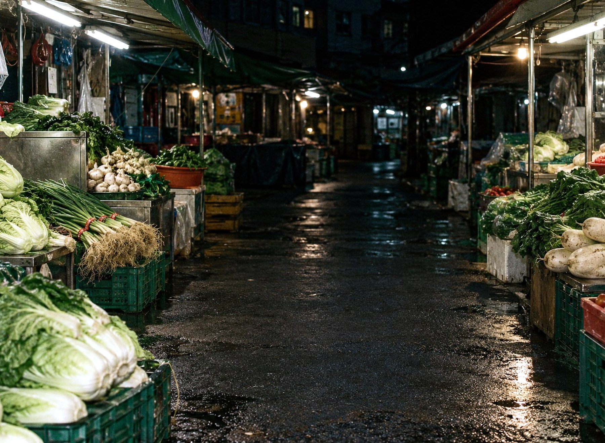
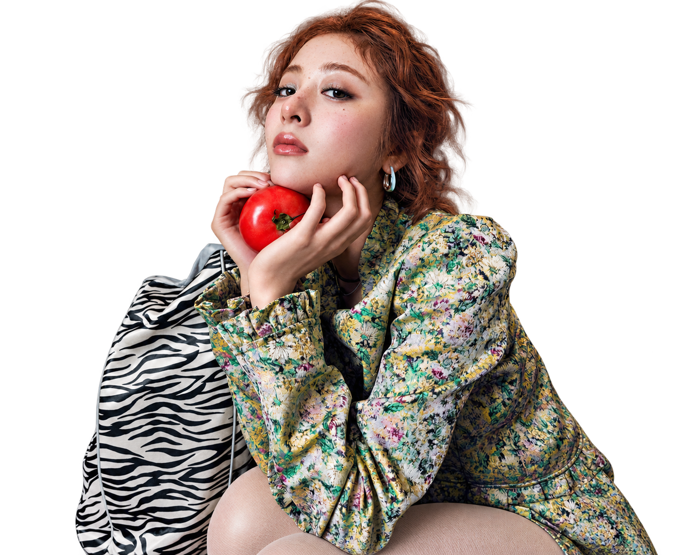

LE SSERAFIM / YUNJIN / AFTER HOURS
WEIRD
GARLIC
밤시장 기록 / 윤진
VOL. 05 / WEIRD GARLIC
The last tomato of the night.
Wet pavement, warm lights, a paper bag full of strange little treasures. Stay until the shutters come down.
ROLL 05 / SAVED
Choose a frame to open it, or drag a thumbnail into the scene.